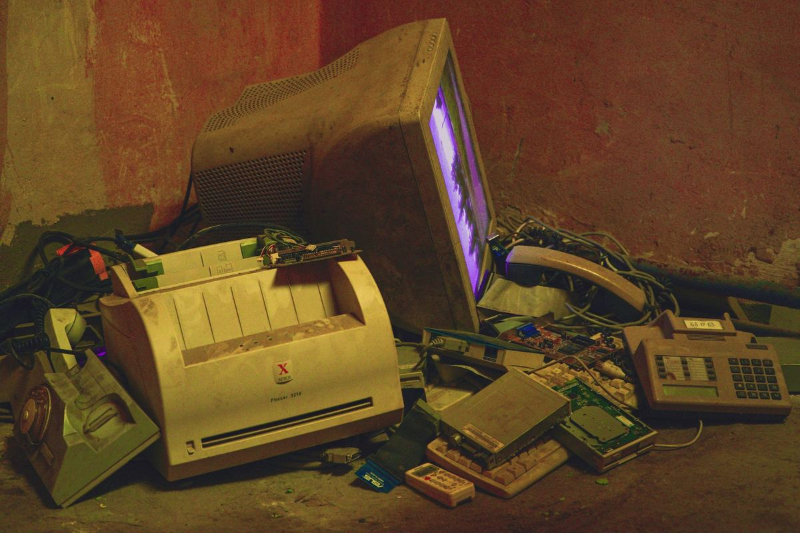

You closed on the house and the garage is still full. Once the keys are yours, so is whatever is sitting in it. We haul the leftover furniture, the garage shelving, the patio pile and the boxes in the attic. The paint and chemicals on a shelf are the exception, and those go to your city's household chemical collection program.
It happens more than people expect. A seller runs out of truck space, or out of time, or decides the thing in the corner is not worth moving twice. The buyer walks in on move-in morning and finds a house that is empty everywhere except the places nobody looks at during a showing.
Say it at the walkthrough, not after
The final walkthrough is the moment the leftovers are still someone else's problem. Open the garage. Pull down the attic ladder. Look in the shed, behind the fence, and down the side yard where the trash cans live. Those four places hold almost everything a seller leaves.
How personal property and the condition of the house get handled is in the paperwork, not in our hands. Most North Texas resale deals run on the TREC one to four family residential contract, and what it says about what stays and what goes is between you, your agent and your title company. We are haulers, not your representation, and we will not pretend otherwise. Ask before closing, because after funding the conversation is usually over and the pile is yours.
If it is already yours, there is no point relitigating it. At that stage the only question left is how fast it can be gone.
What usually gets left
The same short list shows up over and over:
- Garage shelving, a workbench, and the overhead racks bolted to the joists
- A dead second fridge or a chest freezer in the garage
- Patio furniture, a rusted grill, and a stack of pots by the hose bib
- Curtains, rods, blinds and the hardware nobody unscrewed
- Paint cans, half a bag of concrete, leftover tile and a roll of carpet pad
- Boxes in the attic that belonged to the owner before the last one
- A swing set, a trampoline frame, or a shed with a bad roof
- Bulk trash already dragged to the curb and skipped by the city
All of that is a normal haul for us. The shelving and racks come off the wall, which is its own small job, covered in garage shelving and what is bolted to the wall. The shed is a separate decision, and what is inside the shed covers the contents side of it.
Do the walkthrough with a flashlight. Attic, garage rafters, under the stairs, behind the shed, and the side yard. Sellers leave things in the places buyers only look at once, and finding it before funding is worth more than finding it after.
The shelf that does not go on the trailer
Almost every leftover garage has one: paint, thinner, motor oil, gasoline in an old can, pool chemicals, weed killer, a jug with no label.
We do not take any of it. That is household hazardous waste, and your city takes most of it free for residents. Plano runs its own household chemical collection program, and Frisco's Environmental Services operates a chemical and electronics disposal and reuse center. The TCEQ keeps a statewide overview of household hazardous waste that also points used motor oil at collection centers.
Set that material aside in one spot before we arrive. Then the rest of the garage is a straight haul and nobody is standing over an unlabeled bottle guessing.
Older houses, and what is under the surprise
A lot of the housing stock in the older northern suburbs predates the rules people assume have always been there. The EPA notes that homes built before 1978 may contain lead-based paint, and that disturbing it is what creates the hazard.
For a cleanout that matters in one specific way. Carrying out a stack of old painted trim, a pile of cabinet doors, or anything a previous owner already tore off a wall is different from hauling a couch. If a room has clearly been opened up and left mid-project, tell us before we schedule. If there is any question about lead or asbestos in what was disturbed, that is a testing conversation with the right trade first, not a loading conversation. We will say so and wait.
Older Plano neighborhoods also run alley collection, so the pile the seller dragged out back may be sitting in a spot the city route does not service the way you think. The Plano junk removal page covers how the local programs actually work.
The free route, when you have the time
If you are not in a hurry, use the city first. Plano publishes its bulky item collection rules, and most cities in the area run something similar with a set-out day and a restricted list. We would rather tell you the pile qualifies and lose the job than take money you did not have to spend.
The catch is timing. Bulky pickup runs on the city's schedule, not yours, and if the movers land Saturday and the garage has to be clear Friday, that window has usually already closed. That is the actual reason most of these calls happen.
How the job runs
Send photos of the garage, the attic hatch, the shed and the curb pile. A crew comes out, looks at what is going, and gives you a firm number before anything is lifted. The quote is the bill, and disposal is included.
Our own crews carry everything out and sweep the space when it is clear, which matters more than usual here, because the next thing happening in that garage is your own boxes going in. The service page for this work is garage cleanouts, and what we will and will not take is the full list if you are not sure about something specific. We work across the northern suburbs, including Plano, Frisco and Allen, seven days a week. When the thing left behind is a dead fridge in the garage, we pull those out of McKinney houses regularly. Call before noon and same afternoon is typical, not guaranteed. You can send us the walkthrough photos whenever you are ready.
Frequently asked questions
The seller left a bunch of stuff. Is it mine now?
That depends on your contract and your closing, not on us. Ask your agent or your title company. Once you own it and want it gone, we haul it.
Can you come the same week we close?
Usually. Pickups run seven days a week, and calling before noon often gets an afternoon slot. Same-day is typical in the northern suburbs, never guaranteed.
Will you take the paint and the gas can in the garage?
No. Those are household hazardous waste. Plano, Frisco and the surrounding cities run collection programs for residents, and we will point you to yours.
Can you take the garage shelving off the wall?
Yes. Anchored shelving, overhead racks and built-in benches all come down. Empty them first so the crew is unbolting an empty frame.
What about the pile the seller left at the curb?
We take it. If the city already skipped it, that usually means something on it is on the restricted list, which is a normal haul for us.
Most of these end up being one trip. The rest of what we haul is on the services page.